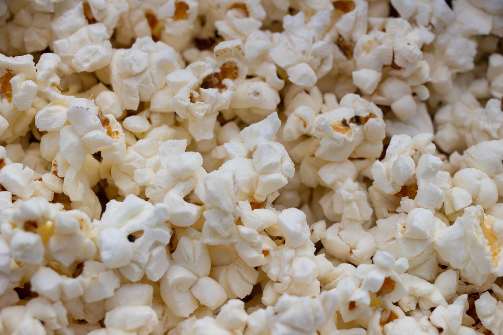

Popcorn

Everybody loves popcorn, and this is how you make the best ones
Let's make the best popcorn in the world. Through trial and error
I've identified the best way to make them. You wont regret following this recipe
- Popcorn kernels
- Powdered Cheese
- Salt
- Tallow
- Sugar
- Butter
Steps
- Turn on the oven and melt the tallow in the kettle.
- Cover the bottom of a kettle with one layer of popcorn kernels. Make sure they are not stacked on top of each other.
- Put on a lid and turn the temperature on the stove up to max.
- Don't touch the lid or move it around. Just let it sit completely still. This maximizes the heat.
- When you hear the popcorn pop, wait until they only pop every now and then and lift the kettle off the stove. Turn off the heat.